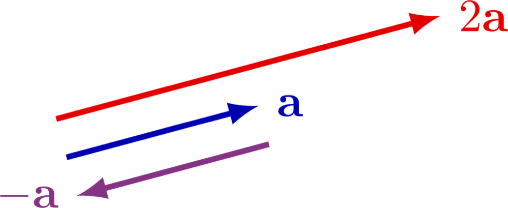
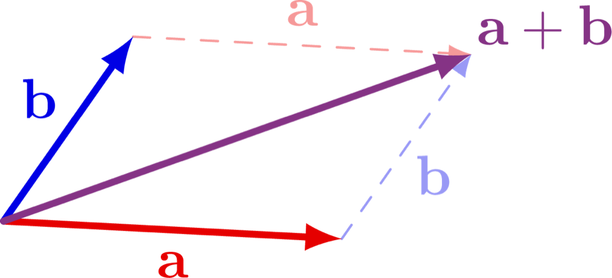
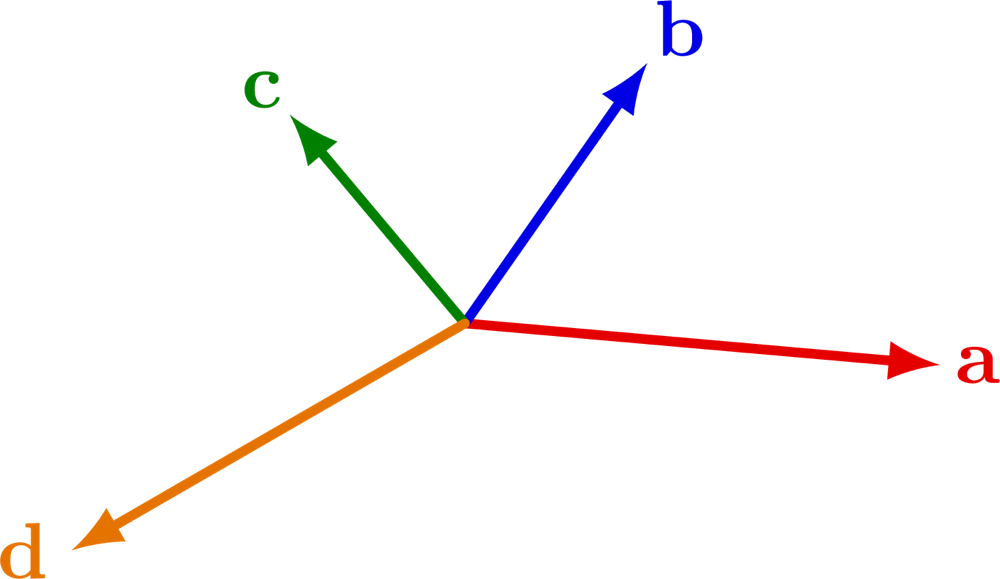
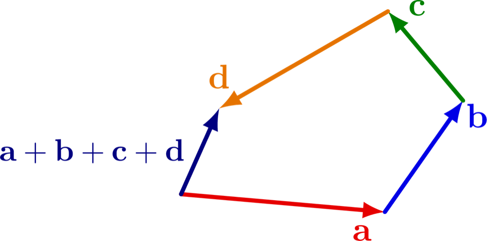
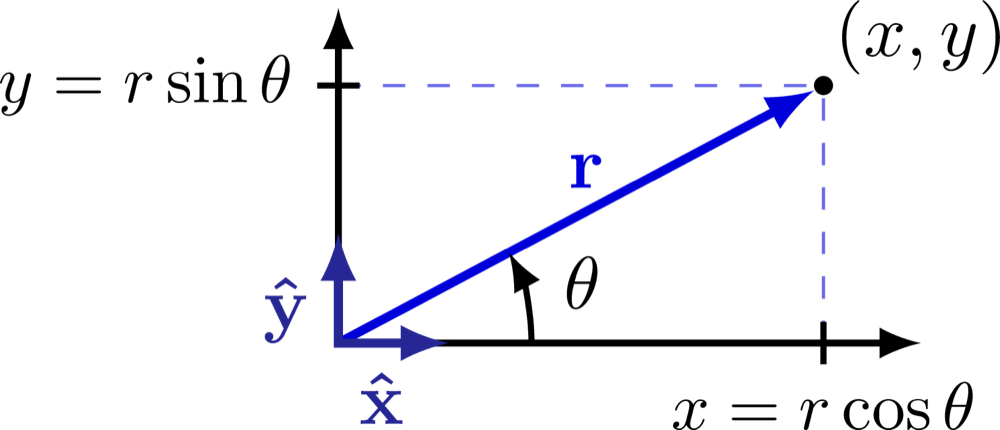
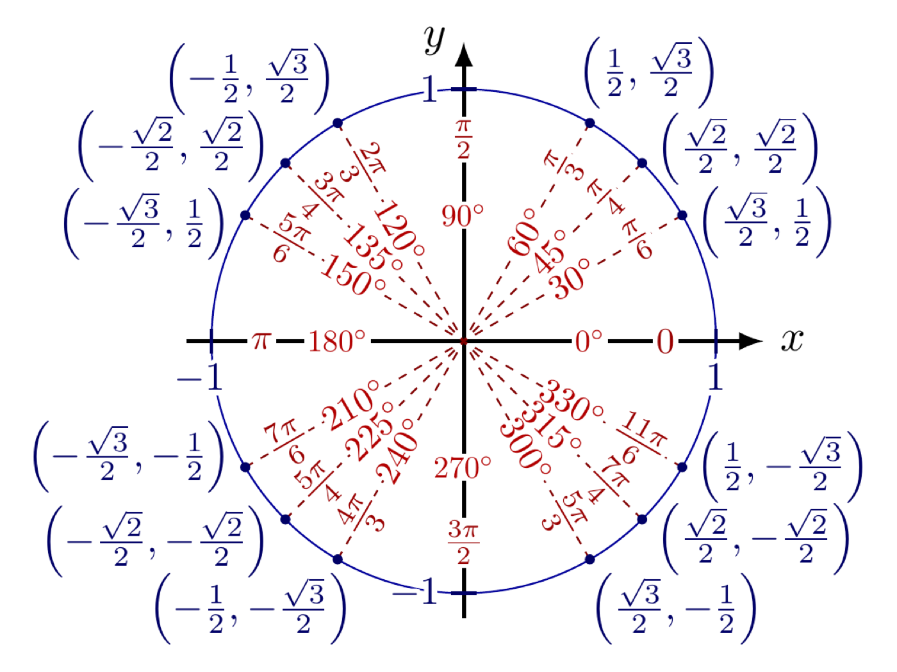
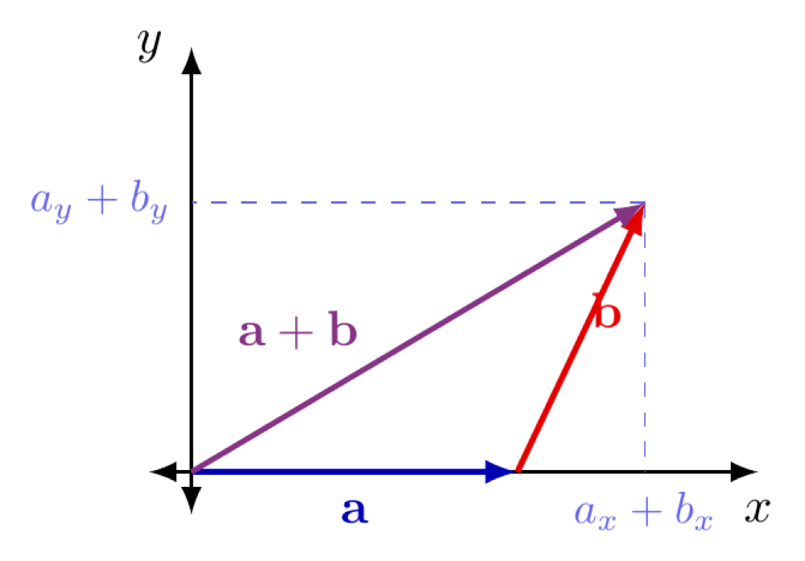

Vectors as a new mathematical object, the five operations vector algebra defines, and addition and subtraction worked two ways: geometrically, and through components, right-triangle trigonometry, and the unit circle.
I open this lesson by saying plainly what role math plays in this course: it's a tool. Mathematics on its own is a much bigger and deeper subject than anything we'll touch here, and every so often we'll pause and look at a piece of that bigger picture, but day to day, this course uses math instrumentally, to describe and predict what physical systems do.
I frame it against something every student already did once. Years ago, you learned numbers: the object itself, then the rules for operating on that object, addition, subtraction, multiplication, square roots. Today I do the same thing with a new object, the vector. First the object, then the rules for what you're allowed to do with it.
I also put vectors on a hierarchy, so it's clear this isn't the end of the line. Scalars and vectors are the tip of the iceberg. Matrices come after them, and tensors after that, later on if you keep going in this direction. Nobody needs to know what a tensor is today. The point is just that today's new object isn't the last one you'll meet.
A scalar is a quantity described completely by a magnitude, a number and a unit, nothing else. A vector is a quantity that needs both a magnitude and a direction to be fully described. Mass is a scalar: 2 kg doesn't point anywhere. Velocity is a vector: 2 m/s isn't a complete statement until you say which way.
Vectors are usually written with an arrow, \(\vec{a}\), or in bold, \(\mathbf{a}\); the magnitude of a vector is written \(|\vec{a}|\), or just \(a\) without the arrow. Two vectors are equal exactly when they have the same magnitude and the same direction. Where a vector is drawn doesn't matter, only how long it is and which way it points, so the same vector can be redrawn starting from any point in space without becoming a different vector.
Before doing anything with vectors, I give students the actual list of quantities from this course that fall on each side:
| Vectors | Scalars |
|---|---|
| displacement | distance |
| velocity | speed |
| acceleration | mass |
| force | time |
| weight | density |
| electric field | electric potential |
| magnetic field | electric charge |
| gravitational field | gravitational potential |
| momentum | temperature |
| area | volume |
| angular velocity | work / energy / power |
Notice how many of these come in pairs, distance and displacement, speed and velocity. Same underlying idea, but one of them carries a direction and the other doesn't. That distinction is going to matter for the rest of the course.
Vector algebra defines five operations. Addition, \(\vec{a}+\vec{b}\), combines two vectors into one. Subtraction, \(\vec{a}-\vec{b}\), is addition of the reverse of the second vector. Scalar multiplication, \(k\vec{a}\), scales a vector by an ordinary number \(k\). The dot product, \(\vec{a}\cdot\vec{b}\), takes two vectors and returns a scalar. The cross product, \(\vec{a}\times\vec{b}\), takes two vectors and returns a third vector, perpendicular to both of the first two.
I list all five so students know the algebra doesn't stop at what we're doing today. The dot and cross products come back later in the course, in work and in magnetic force, but they're not part of this lesson. What we need today is scalar multiplication and the addition and subtraction of vectors.
For a vector \(\vec{a}\) and a scalar \(k\), the product \(k\vec{a}\) has magnitude \(|k|\,|\vec{a}|\): the vector's length is scaled by the size of \(k\), regardless of its sign. The direction depends on the sign of \(k\) alone. If \(k>0\), \(k\vec{a}\) points the same way as \(\vec{a}\); if \(k<0\), it points the opposite way. \(2\vec{a}\) is twice as long as \(\vec{a}\), same direction; \(-\vec{a}\) is the same length as \(\vec{a}\), reversed:

Addition and subtraction take longer, because each one can be done two ways, geometrically and algebraically, and both need to agree with each other.
Geometric addition follows one rule, usually called the tip-to-tail rule: to add \(\vec{a}+\vec{b}\), draw \(\vec{a}\), then draw \(\vec{b}\) starting from wherever \(\vec{a}\) ended. The sum \(\vec{a}+\vec{b}\) is the single vector that runs from the start of \(\vec{a}\) to the end of \(\vec{b}\), regardless of how long or short either one is:

The same rule extends to any number of vectors. Below, four vectors, \(\vec{a}\), \(\vec{b}\), \(\vec{c}\), \(\vec{d}\), start from a common origin:

Chain them tip-to-tail instead, in any order, and the sum \(\vec{a}+\vec{b}+\vec{c}+\vec{d}\) is the single vector from the very first tail to the very last tip:

Subtraction is addition of the reverse: \(\vec{a} - \vec{b}\) is defined as \(\vec{a} + (-\vec{b})\), where \(-\vec{b}\) is \(\vec{b}\) scaled by \(k=-1\), same magnitude, opposite direction, exactly the scalar multiplication rule from the previous section. Once \(-\vec{b}\) is drawn, subtraction is just tip-to-tail addition again. There's no separate geometric rule to learn for it.
Geometry alone gets awkward once you're adding more than two or three vectors at odd angles, so for anything beyond that I move to the algebraic version: breaking every vector into an \(x\) component and a \(y\) component, adding the components as plain numbers, then recombining.
Start with a single vector \(\vec{r}\) of magnitude \(r = |\vec{r}|\), drawn at angle \(\theta\) measured counterclockwise from the positive \(x\)-axis. Dropping a perpendicular from its tip down to the \(x\)-axis makes a right triangle: the vector itself is the hypotenuse, and its components \(r_x\) and \(r_y\) are the two legs.

By the definition of cosine and sine in a right triangle, cosine of an angle is the adjacent leg over the hypotenuse, and sine is the opposite leg over the hypotenuse:
\[\cos\theta = \frac{r_x}{r}, \qquad \sin\theta = \frac{r_y}{r}\]
Rearranged for \(r_x\) and \(r_y\), these become the two equations used constantly for the rest of the course:
\[r_x = r\cos\theta, \qquad r_y = r\sin\theta\]
Those two equations only look obviously true while \(\theta\) is an acute angle sitting inside a triangle. The unit circle is what makes them work for any angle at all, including angles well past 90° where there's no triangle left to draw. The unit circle is the circle of radius 1 centered at the origin. Walk around it by angle \(\theta\), measured counterclockwise from the positive \(x\)-axis, and by definition the point you land on has coordinates \((\cos\theta, \sin\theta)\). A vector of length \(r\) at angle \(\theta\) is that same point, scaled outward by \(r\): its tip lands at \((r\cos\theta, r\sin\theta)\), which is exactly \((r_x, r_y)\).

Reading the unit circle also fixes the sign of every component automatically, without a separate memorized rule for each quadrant, since a coordinate on the circle is negative exactly where that side of the circle sits on the negative side of the axis:
Once every vector in a sum has been broken into components this way, addition stops being a geometric construction and becomes ordinary arithmetic: add every \(x\) component together, add every \(y\) component together.
\[R_x = \sum r_x, \qquad R_y = \sum r_y\]

To turn that pair of numbers back into a single vector, the same right triangle runs in reverse. \(R_x\) and \(R_y\) are the legs, and \(|\vec{R}|\) is the hypotenuse, so the Pythagorean theorem gives the magnitude:
\[|\vec{R}| = \sqrt{R_x^2 + R_y^2}\]
and since \(\tan\theta\) is opposite over adjacent, the inverse tangent gives the angle:
\[\theta = \arctan\left(\frac{R_y}{R_x}\right)\]
There's one catch. A calculator's arctan only ever returns an angle between \(-90°\) and \(90°\), so on its own it can't distinguish a vector in the first quadrant from the vector pointing the opposite way in the third, since \(R_y/R_x\) comes out identical for both. The fix is to never trust arctan blindly: look at the actual signs of \(R_x\) and \(R_y\), find the quadrant they put you in from the table above, and add or subtract \(180°\) from the calculator's answer if that's what it takes to land in the right one.